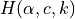
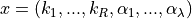
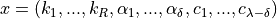
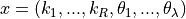
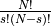
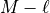

Creating the Equilibrium Manifold¶
For the mass conservation approach of [OMYS17] there are multiple ways that one can form the equilibrium manifold,
. In the approach we have constructed, we have chosen the equilibrium manifold
that will result in two characteristics. The first of which is that the decision vector ultimately chosen will
consist of only kinetic constants and species’ concentrations. The reason for this is that we would like to remove the
need for the user to provide bounds on the so called deficiency parameters,  . These bounds in practice can
be somewhat difficult to find as they are not tied to any physical aspect of the network. The second characteristic we
impose is that the manifold will be as close as possible to being linear with respect to the deficiency parameters and
those species not in the decision vector. If the manifold is close to being linear in these variables, then solving for
them is much simpler resulting in a shorter solve time for SymPy’s solve function and the avoidance of unsolvable
instances of the problem.
. These bounds in practice can
be somewhat difficult to find as they are not tied to any physical aspect of the network. The second characteristic we
impose is that the manifold will be as close as possible to being linear with respect to the deficiency parameters and
those species not in the decision vector. If the manifold is close to being linear in these variables, then solving for
them is much simpler resulting in a shorter solve time for SymPy’s solve function and the avoidance of unsolvable
instances of the problem.
We now describe the process taken to find the decision vector and resulting equilibrium manifold. As stated in [OMYS17], the choice of the decision vector is as follows:
 for proper and over-dimensioned networks
and
 for under-dimensioned networks.
Although these decision vectors can be used, it is apparent that if they are chosen then the user will need to provide
bounds for the deficiency parameters, . However, as can be inferred by the statement on the bottom of page
7 in the S1 Appendix of [OMYS17], as long as the parameters and  are fixed and we can form
equation (2.7), then the results of Proposition 1 of page 8 follow. This allows one to choose the decision vector to
be as follows for proper and over/under - dimensioned networks:
are fixed and we can form
equation (2.7), then the results of Proposition 1 of page 8 follow. This allows one to choose the decision vector to
be as follows for proper and over/under - dimensioned networks:
,
where the  values are nonidentical choices of the species’ concentrations,
values are nonidentical choices of the species’ concentrations,  .
.
Now that we have reformed the decision vector to be in terms of just kinetic constants and species’ concentrations, the
next step is to choose the values such that the equilibrium manifold is as close to being linear as possible.
To do this, we first generate  choices of values using ,
where  is the number of species and
is the number of species and  is the rank of the stoichiometric matrix. Using each of these
sets of values, we then test how many rows of (9) in [OMYS17] are linear in those species’ concentrations
that are not in by testing if the second order derivatives of the expression in the row is zero. This is
essentially testing if the expression is jointly linear with respect to a given set of species’ concentrations not in
.
is the rank of the stoichiometric matrix. Using each of these
sets of values, we then test how many rows of (9) in [OMYS17] are linear in those species’ concentrations
that are not in by testing if the second order derivatives of the expression in the row is zero. This is
essentially testing if the expression is jointly linear with respect to a given set of species’ concentrations not in
.
In practice going through all choices can be expensive for large networks, to reduce this
runtime we exit this routine if all rows of (9) are linear in those species’ concentrations not in and
choose this set of variables for our decision vector. After choosing the set of variables,
we then choose by selecting  independent rows of (9). This process of selecting
is reflected in the run of crnt4sbml by the following output produced by
crnt4sbml.CRNT.get_mass_conservation_approach()
Creating Equilibrium Manifold ...
Elapsed time for creating Equilibrium Manifold: xx
Once we have selected the equilibrium manifold, we then use the manifold to solve for all the deficiency parameters and
species’ concentrations not in using SymPy’s solve function. This allows us to create expressions for each
species’ concentration. This process may take several minutes, so we have provided the following output to the screen
to aid the user:
Solving for species' concentrations ...
Elapsed time for finding species' concentrations: xx